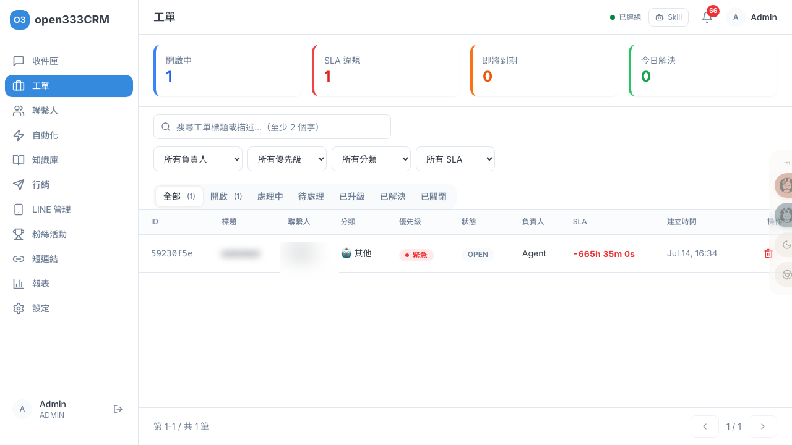
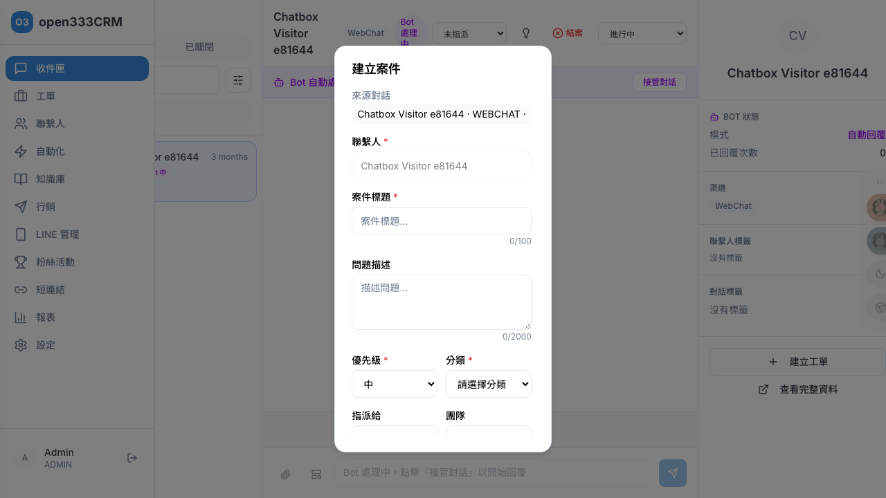

工單管理
把客戶的每一件服務需求，變成一張可追蹤、可指派、有 SLA 計時的工單。從建立、處理、升級到結案，全程留下時間軸記錄。
1 功能總覽
「工單」（案件）是把一次客戶服務需求正式立案追蹤的單位。相較於收件匣的「即時對話」，工單是「有始有終的任務」——它有狀態、優先級、分類、負責人、SLA 計時，以及一條完整記錄「誰在什麼時候做了什麼」的時間軸。
2 工單列表
工單列表以表格呈現所有工單，預設依 SLA 到期時間排序——快到期的排最上面，讓最急的工單先被看到（無 SLA 的排最後）。

| 欄位 | 說明 |
|---|---|
| ID | 工單編號（取前 8 碼） |
| 標題 / 聯繫人 | 工單主旨與所屬客戶 |
| 分類 | 有值時前面帶 🤖（代表是 AI 自動分類，可手動改） |
| 優先級 / 狀態 | 彩色徽章（見第 6 節） |
| 負責人 | 未指派顯示「未指派」 |
| SLA | 即時倒數（格式時分秒）；逾期轉紅並顯示負號；無截止顯示「無 SLA」 |
| 建立時間 / 操作 | 建立時間與刪除按鈕 |
列表左緣有依優先級著色的色條，一眼分辨急件。每頁 20 筆。
3 統計卡與篩選
頁面頂端四張統計卡是「當下的即時快照」，快速掌握團隊負荷：
| 統計卡 | 意義 |
|---|---|
| 開啟中 | 還在處理的工單（開啟 + 處理中） |
| SLA 違規 | 未結案且已超過解決期限的工單 |
| 即將到期 | 未結案且在 30 分鐘內就要到期的工單 |
| 今日解決 | 今天已解決的工單數 |
搜尋與篩選
搜尋框依標題或描述過濾（需至少 2 個字）。下方四個下拉可任意組合：
| 篩選 | 可選值 / 說明 |
|---|---|
| 負責人 | 所有負責人 + 客服名單 |
| 優先級 | 所有 / 緊急 / 高 / 中 / 低 |
| 分類 | 所有 / 維修 / 查詢 / 投訴 / 其他 |
| SLA | SLA 違規（已逾期）/ 即將到期（30 分內）/ 正常 |
再下方是狀態分頁：全部 / 開啟 / 處理中 / 待處理 / 已升級 / 已解決 / 已關閉，每個分頁尾端顯示數量。
4 建立工單
工單有兩種建立路徑，欄位相同但來源不同：
- 從收件匣對話帶入（最常用）：在收件匣右欄點「建立工單」，聯繫人與來源對話自動帶入且唯讀，畫面上方會顯示「來源對話」標籤。
- 獨立建立：需自己搜尋選聯繫人。若系統完全沒有渠道，會擋下並提示「系統尚無可用渠道，請先建立渠道」。

逐欄位說明
| 欄位 | 必填 | 規則與留空行為 |
|---|---|---|
| 聯繫人 | ✓ | 獨立建立時搜尋（需輸入至少 2 個字），找不到可當場「建立新聯繫人」；未選提示「請選擇聯繫人」 |
| 案件標題 | ✓ | 上限 100 字（即時顯示字數）；空白提示「請輸入案件標題」 |
| 問題描述 | 上限 2000 字，可留空 | |
| 優先級 | ✓ | 低 / 中 / 高 / 緊急，預設「中」 |
| 分類 | ✓ | 維修 / 查詢 / 投訴 / 其他；未選提示「請選擇分類」 |
| 指派給 / 團隊 | 選客服會自動帶入其團隊 | |
| SLA 政策 | 預設「依優先級自動套用」——留空時系統依優先級找對應政策 |
按下「建立案件」後系統做了什麼
一個動作連鎖觸發多件事：①依優先級或指定政策算出 SLA 解決期限（建立時間 + 解決分鐘數）②狀態設為「開啟」並寫時間軸 ③工單即時出現在列表 ④觸發AI 自動分類（若有關聯對話，抓最新客訊自動填分類，顯示 🤖）⑤若「沒指定負責人但有指定團隊」，觸發自動指派（見下）。建立成功後直接跳到該工單詳情頁。
5 工單詳情與編輯
點列表任一工單進入詳情頁。左欄可就地編輯各項欄位，右欄是時間軸。頂部依狀態顯示操作按鈕：標記解決、關閉案件、重新開啟、升級。
各欄位與操作的實際行為
| 操作 | 按下去會發生什麼 |
|---|---|
| 標題 | 點擊就地編輯，Enter 儲存、Esc 取消，上限 100 字 |
| 指派負責人 | 若工單當時是「開啟」，指派會自動把狀態推到「處理中」，並通知被指派人 |
| 標記解決 | 狀態轉「已解決」、記錄解決時間，並觸發 CSAT 滿意度調查流程 |
| 關閉案件 | 先跳確認框「確定要關閉此案件嗎？關閉後可從已關閉清單重新開啟」，確認後結案 |
| 重新開啟 | 已關閉的工單轉回「開啟」 |
詳情頁分類若由 AI 填入會顯示「🤖 AI 自動分類」，你可隨時手動改。SLA 區塊顯示政策、首次回應達成狀態（已達 ✓ / 未達 ✗ / 待回應）、解決目標與即時倒數。
6 狀態轉移規則
工單狀態不能隨意亂跳——只能依合法路徑轉移，避免流程錯亂。狀態下拉只會列出目前狀態能去的方向。六種狀態的意義：
| 狀態 | 意義 | 能轉移到 |
|---|---|---|
| 開啟 | 剛建立、還沒人處理 | 處理中、已關閉 |
| 處理中 | 已指派或客服開始處理 | 待處理、已解決、已升級、已關閉 |
| 待處理 | 等待中（等客戶回覆或第三方） | 處理中、已升級、已關閉 |
| 已解決 | 問題處理完，等關閉或客戶確認 | 已關閉、處理中（可退回） |
| 已升級 | 已升級給更高層/更高優先 | 處理中、已關閉 |
| 已關閉 | 結案 | 重新開啟（回到開啟） |
7 升級案件
當工單需要主管介入或提高處理層級，點詳情頁的「升級」開啟升級視窗。升級是獨立動作，會把狀態轉為「已升級」、優先級提高，並通知相關人。
| 欄位 | 必填 | 說明 |
|---|---|---|
| 升級原因 | ✓ | SLA 即將違規 / SLA 已違規 / 客戶多次催促 / 負面情緒 / 其他（附快選膠囊） |
| 補充說明 | 上限 500 字 | |
| 升級後優先級 | ✓ | 預設自動帶「高一級」，只能選比目前更高的（已緊急則維持緊急） |
| 重新指派給 | 可維持原負責人，或改派（選項顯示各客服目前「(N 件)」負荷） | |
| 通知對象 | 主管（預設勾）、原負責客服（預設勾）、團隊群組（預設不勾） |
8 SLA 計時與自動行為
SLA（服務等級承諾）是工單「該多快處理完」的計時器。系統背景會持續掃描進行中的工單，在關鍵時間點自動告警、甚至自動升級。理解它，才知道那些通知從哪來。
三種 SLA 計時（各自獨立）
| 類型 | 計時什麼 | 逾期會怎樣 |
|---|---|---|
| 首次回應 | 建立後多久內要第一次回覆客戶 | 發告警給負責人（違規時加通知主管） |
| 解決期限 | 多久內要解決（決定工單的到期倒數） | 發告警；逾期會自動把優先級升一級並通知主管 |
| 客戶等待 | 客服回覆後客戶又連續發訊 | 累積達 3 則沒回應就告警 |
每種都有「預警」（到期前 N 分鐘先提醒，N 由政策決定、出廠預設 30 分）與「違規」（過期）兩個時間點。同一工單同類告警在 24 小時內只發一次，不會連環轟炸。
自動指派（round-robin）
建立工單時若「沒指定負責人但有指定團隊」，系統會自動從團隊裡挑一位客服：選目前手上開啟中案件最少的人，同票時輪流。被指派後工單自動轉「處理中」並通知該客服。找不到可用客服就暫不指派。
9 時間軸與備註
詳情頁右欄的時間軸自動記錄工單的所有事件，依語意著色圖示，倒序顯示：
| 事件 | 時間軸顯示（範例） |
|---|---|
| 建立 | 建立了案件「冰箱維修」 |
| 狀態變更 | 狀態：處理中 → 已解決 |
| 指派 | 指派給 王小明（藍色圖示） |
| 升級 | 案件升級（中 → 高，原因：客戶多次催促）（紅色圖示） |
| 解決 / 關閉 / 重開 | 對應事件（解決為綠色圖示） |
新增備註
在「新增備註」區撰寫內容，可勾選「內部備註」（預設勾選）。內部備註只給團隊看、會在時間軸標紅底「內部」徽章。